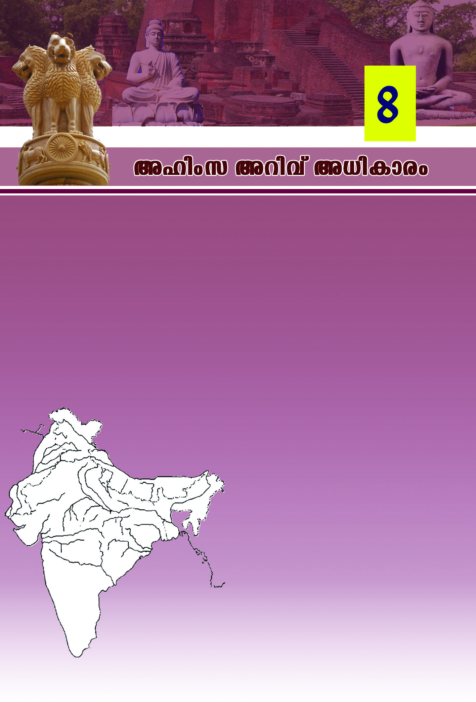
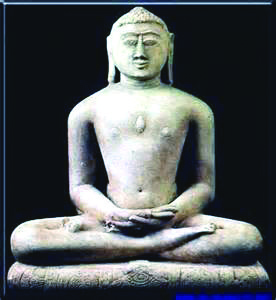
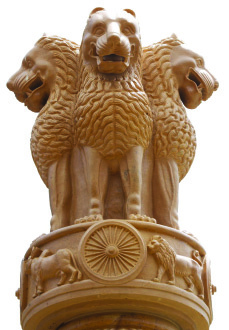
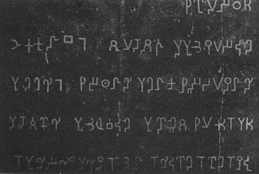
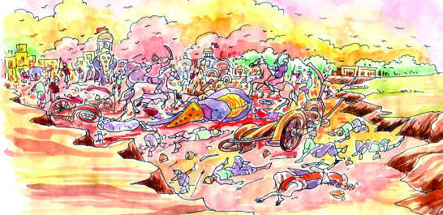
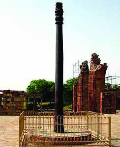
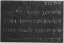
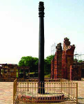

97
97
Alnw-k Adn-hv A[n-Imcw
tKmZm-hcn \Zn
aK[
aK[, AwKw, h÷n, a√, Imin,
h’w, tImkew, tNZn, ]m©mew,
AivaIw, Ah¥n, ipc-tk\, Ipcp,
am’yw, Km‘mcw, Iwt_mPw
F∂n-h-bmbncp∂p ]Xn-\mdv alm-
P-\-]-Z-߃
alm-P-\-]-Z-߃
˛ sshtem-∏n≈n
ImSpw ]Sepw shÆo-cm°n
I\-I-°-Xn-cn\p hf-taIn
ITn-\-an-cp-ºp-Ip-g-ºm-°n-∏e
Icp-\n-c-hm¿Øp-]-Wn-t°In
Adn-hn≥ Xncn-Iƒ sImfp-Øn-°-e-Iƒ˛
°mth-i-Øn¬ NqtSIn
amtem-Sn-gbpw a¿Øym-flm-hn\v
tatem-´p-b-cm≥ Nnd-Ip-XIn
apI-fn¬ sImSpØ Ihn-Xm-`mKw {i≤n-°q.
C¥y-bn¬ a\p-jy-Po-hn-Xw ]ptcm-Kan®Xv F{]-Im-c-am-bn-cp-∂p-sh∂v
Cu Ihn-Xm-`m-KsØ Bkv]-Z-am°n Is≠-Øq.
KwKm-k-a-X-e-Øn-te-°p≈ Bcy-∑m-cpsS apt∂‰w \Ωƒ N¿® sNbvX-
t√m. Bcy-∑m-cpsS hym]-\-sØ-Xp-S¿∂v _n.kn. Bdmw \q‰m-t≠m-
Sp-IqSn KwKmka-X-e-Øn¬ Im¿jnItaJ-eIƒ cq]w-sIm-≠p.
ssIam‰tI{μß-fpw ]´-W-ßfpaS-ßnb Ah P\-]-Z-߃
F∂-dn-bs∏´p. CØcw P\-]Z߃ tKmZm-h-cn- XSwhsc
hym]n-®ncp∂p. Ahbn¬ ]Xn-\m-sdÆw i‡n-bm¿÷n-®p.
Ahsb alm-P\-]Z߃ F∂p
hnfn®p. AXn¬ {][m-\-s∏-´-Xm-bn-
cp∂p aK[.
X∂n-´p≈ `q]Sw \nco-£n®v aK-[-bpsS
ÿm\w Is≠-ØpI.
KwKm \Zn
KT-607/2/ Social Sci. - 5 (M), Vol-2
Page 17


Page 18

98
98
kmaq-ly-imkv{Xw V
""CXp cmPm-⁄-bm-Ip-
∂p... b⁄-Øn-\m-bn´v
{]mWnlnwk taen¬
]mSn-√. Poh-c‡w
sNmcn-™p≈ Hcm-Nm-
chpw ChnsS th≠.
amwkw sIm≠p ≈
]qP th≠. Adnhp
t\SpI ˛ AXmWv
Pohn-Xw. Zb-bp-≈-ht\
Zb -In´q F∂v [cn-
∏n-°p-I-bmWv Cu
h n f w - _ c w . C X v
cmPm⁄...''
h≥tXm-Xn¬ Ccp-º-bncv \nt£-]-ap≈ {]tZ-i-am-bn-cp∂p aK-[. aK-[-
bpsS hf¿®bn¬ {][m\ ]¶p-h-ln-®Xv Ccp-ºm-bp-[-ß-fp-sSbpw D]Ic-
W-ß-fp-sSbpw D]-tbm-K-am-bn-cp-∂p. KwKm-X-S-Ønse CS-Xq¿∂ ImSp-
Iƒ sh´nsØ-fn-°m≥ Ccp-ºp-sIm-≠p≈ agp klm-b-I-am-bn.
CcpºpIe∏ D]-tbm-Kn®v \new DgpXp-a-dn-°m≥ Ign-™p. CXns‚ ^e-
ambn Im¿jntIm¬∏m-Z\w h¿≤n-®p. XpS¿∂v hmWnPy cwK-Øp-≠mb
]ptcm-KXn \K-cßfp-sS hf¿®bv°v CS-bm-°n. Im¿jn-I-cw-KØpw
hmWn-Py-cw-K-Øp-ap-≠mb apt∂-‰-Øn-eqsS aK-[- km-º-Øn-I-ambn A`n-
hr-≤n-{]m-]n-®p. hen-sbmcp ssk\ysØ cq]o-I-cn-°m\pw Np‰p-ap≈
{]tZ-i-߃ Iog-S-°m\pw aK-[-bnse kºZvkar≤n cmPm-°-∑msc
klm-bn-®p. hyXy-kvX-Im-e-ß-fn¬ aK[ `cn® `c-Wm-[n-Im-cn-Iƒ a‰v
alm-P-\-]-Z-ßsf aK-[-tbmSv Iq´n-t®¿Øp. Cßs\ aK[ hnim-e-amb
Hcp cmPy-ambn amdn.
Hcp {]_-e-i-‡n-bmbn amdp-∂-Xn¬ aK-[sb klm-bn® LS-I-߃
GsX√mw?
$
Ccp-ºns‚ e`y-X
$
$
$
Alnwk
aK-[-bnse `c-Wm-[n-Im-cn-bm-bn-cp∂
_nw_n-km-cs‚ hnfw_-c-am-Wn-Xv. F¥m-
bn-cn°mw CØ-c-samcp hnfw-_-c-Øn\v At±-
lsØ t{]cn-∏n-®sX∂v t\m°mw.
Hcp cmPyw F∂ \ne-bn-ep≈ aK-[-bpsS
hf¿®-bn¬ Im¿jn-I-]ptcm-KXn hln®
]¶v \mw a\- n-em-°n-b-t√m. I∂p-Im-en-
I-fm-bn-cp∂p Im¿jnIta-J-e-bpsS ASn-
Ød. \new Dgp-∂-Xn\pw hf-Øn\pw
Imen-Iƒ Bh-iy-am-bn-cp-∂p. F∂m¬
bmK-ß-fpsS `mK-ambn h≥tXmXn¬
I∂p-Im-en-Isf sIms∂m-Sp-°n-b-Xv
Irjnsb {]Xn-Iq-e-ambn _m[n-®p. Cu
]›m-Ø-e-Øn-emWv _nw_n-km-c≥ CØ-c-
samcp hnfw_cw ]pd-s∏-Sp-hn-®-Xv.
Page 19



99
99
Alnw-k Adn-hv A[n-Imcw
CtX Ime-L-´-Øn¬ kaq-l-Øn¬ \ne-\n∂ Ak-a-Xz-߃s°-Xn-cmbn
ssP\-a-Xhpw _p≤-a-Xhpw Bhn¿`-hn-®p. h¿[-am\alm-ho-c≥ {]N-cn-
∏n® ssP\-a-Xhpw KuXa _p-≤≥ ÿm]n® _p≤-a-Xhpw Alnw-kbv°v
{]m[m\yw \¬In. hym]-I-amb arK-_-en-bmWv Alnwk {]N-cn-∏n-°m≥
alm-ho-c-s\bpw _p≤-s\-bpw t{]cn-∏n-®-Xv.
km[m-c-W-°m-cs‚ `mj-bn-em-bn-cp∂p Ah¿ Bi-b-߃ {]N-cn-∏n-
®Xv. alm-ho-c≥ D]-tbm-Kn® `mj {]mIrXv Bbn-cp∂p. _p≤≥
]men`mj D]-tbm-Kn-®p. cmP-Ip-Spw-_-Øn¬ hf¿∂ _p≤\pw alm-ho-
c\pw F√m kpJ-ku-I-cy-ßfpw e`n-®n-cp-∂p. F∂m¬ km[m-cW P\-
ß-fpsS IjvS-X-Iƒ Ahsc Ak-¥p-jvTcpw Akz-ÿ-cp-am-°n. P\-
ß-fpsS Zpcn-X-߃°p≈ Bizm-k-am¿§-ß-fmWv Ah¿ At\z-jn-®Xv.
$ icn-bmb ⁄m\w
$ icn-bmb hnizmkw
$ icn-bmb {]hrØn
ssP\-a-X XØz-߃
_p≤-a-X -X-Øz-߃
$ Cl-tem-I-Po-hnXw ZpxJ]q¿Æ-amWv
$ B{K-l-ß-fmWv ZpxJØn\v ImcWw
$ B{K-l-ßsf
C√m-Xm°nbm¬
ZpxJßsf C√m-Xm°mw
$ AjvSmwKam¿§w A\p-jvTn-°p-I-hgn
B{K-l-ßsf C√m-Xm-°mw.
F¥p-sIm-≠mWv ssP\-˛-_p-≤-a-X-߃ Alnw-kbv°v
{]m[m\yw \¬In-bXv?
alm-ho-cs‚ {]Xna
_p≤s‚ {]Xna
Page 20


100
100
kmaq-ly-imkv{Xw V
A¿∞-imkv{Xw
aucy-km-{am-Py-ÿm-]-I-\m-bn-cp∂ N{μ-Kp]vX
aucys‚ `cW D]-tZ-jvSm-hm-bn-cp∂p NmW-Iy≥.
Ct±lw IuSn-ey≥ F∂ t]cnepw Adn-b-s∏-´ncp∂p.
NmWIys‚ {]kn-≤-amb {KŸamWv A¿∞-
imkv{Xw. i‡hpw Imcy-£-a-hp-amb Hcp `c-W-
Øns‚ kwLm-S\w Fß-s\-bm-bn-cn-°Ww F∂p-
≈-XmWv Cu {KŸ-Øns‚ {]ta-bw.
NmW-Iy≥
tZio-b-ap{Z
cmPm-hns‚ [¿Ωw
cmPy-Ønse hnhn[ hn`mKw P\-߃ XΩn¬ sFIyw D≠m-bmte
cmPyØv kam-[m\w D≠m-Ip. AXn-\mbn Atim-I≥ kzoI-cn®
\bamWv "[Ωw' ([¿Ωw). P\-ß-fn¬ sFIyhpw kln-jvWp-Xbpw
hf¿Øn cmPyØv kam-[m\w \ne-\n¿ØpI F∂-Xm-bn-cp∂p CXns‚
e£yw. Ah-bn¬ Nne Bi-b-߃ NphsS tN¿°p-∂p:
amXm-]n-Xm-°sf A\p-k-cn-°pI
Kpcp-°-∑msc BZ-cn-°pI
arK-_en Hgn-hm-°pI
F√m aXhnizm-k-ß-tfmSpw klnjvWpX ImWn-°pI
kl-Po-hn-I-tfmSv IcpW ImWn-°pI
Atim-I- N-{I-h¿Øn-bpsS [¿Ωw F∂ \b-Øns‚ B\p-Im-enI-
{]-k‡n N¿® sNøq.
A[n-Imcw hf-cp∂p
Cu Nn{Xw \n߃°v ]cn-N-b-ap-≈-Xm-Wt√m. CXv
FhnsS-sbms°-bmWv \n߃ I≠n-´p-≈Xv?
CXv \ΩpsS tZiob ap{Z-bmWv. AtimI N{I-h¿Øn
kmc-\m-Yn¬ ÿm]n® kvXw`-Øn¬ \n∂mWv Cu ap{Z
FSp-Øn-´p-≈-Xv. AXn-ep≈ AtimI N{I-amWv \ΩpsS
tZiob]Xm-I-bpsS a[y-Øn¬ ImWp-∂Xv.
aK[ tI{μ-am°n hf¿∂ph∂ aucy-cm-Phwi-Ønse {][m\ cmPm-hm-
-bn-cp∂p Atim-I≥. N{μ-Kp-]vX-au-cy\mWv aucy-cm-P-hwiw ÿm]n®Xv.
Page 21



101
101
Alnw-k Adn-hv A[n-Imcw
Atim-I N{I-h¿Øn [¿Ωhpw Xocp-am-
\-ßfpw \n¿tZ-i-ßfpw ]md-I-fn¬
sImØn-h-®mWv P\-ßsf Adn-bn-®ncp-∂-
Xv. CØcw inem-en-Jn-X-߃ {][m\ -]m-
X-tbmc-ßfnepw \K-c-tI-{μ-ß-fnepamWv
ÿm]n-®n-cp-∂Xv.
_p≤-a-X-am-bn-cp∂p [¿Ωw {]N-cn-∏n-°m≥
Atim-I\v t{]c-W-bm-b-Xv. cmPy-Øns‚ hnkvXrXn h¿≤n∏n-°m-\mbn
Atim-I≥ \nc-h[n bp≤-߃ \S-Øn. AXn¬ {][m-\-s∏-´-Xm-bn-cp∂p
Ienw-K-cm-Py-hp-am-bp≈ bp≤w. CXn¬ IenwK ]cm-P-b-s∏-´p. At\Iw
t]cpsS ac-W-Øn\pw Zpcn-X-߃°pw CS-bm-°nb Cu bp≤-Øn\v tij-
amWv Atim-I≥ _p≤-aXw kzoI-cn-®-Xv. _p≤-a-Xw temI-Øns‚ ]e
`mK-ß-fnepw {]N-cn-∏n-°p-∂Xn¬ At±lw {][m\ ]¶v hln®p.
Atim-Is‚ inem-en-JnXw
C\nsbmcp bp≤w th≠
N{I-h¿Øn-bm-b-Xn-\p-
tijw Atim-I≥ bp≤-
ß-fn-eqsS cmPyw hnI-
kn-∏n-®p-sIm-≠n-cp-∂p.
X\n°v Iog-S-ßm≥ Bh-
iy-s∏´v Ienw-K-bnse
cmPm-hn\v At±lw Hcp
ktμ-i-a-b-®p. A`n-am-\n-
bmb Ienw-K- cm-Pmhv Iog-
S-ßm≥ Hcp-°-am-bn-cp-∂n-√. 261 _n.kn bn¬ Atim-I≥ Ienw-Ksb
Iogvs∏-Sp-Øm≥ ]pd-s∏-´p. kzmX-{¥y-kvt\-ln-I-fmb Ienw-K-bnse P\-
߃ H‰-s°-´mbn Atim-Is‚ B{I-aWsØ {]Xn-tcm-[n-®p. Atim-
Is‚ {]Xo-£bv°v hncp-≤-ambn IenwK ]e-t∏mgpw hnP-b-Øns‚ h°n-
seØn. F∂m¬ A¥n-a-hn-Pbw Atim-I\p Xs∂-bm-bn-cp-∂p.
bp≤-°fw Ccp-]-£-tØbpw ssk\n-I-cpsS arX-tZ-l-߃ sIm≠v
\nd-™p. h´-an´v ]d-°p∂ Igp-I≥am¿... ssIIm-ep-Iƒ \jvS-s∏´v thZ\-
sIm≠v ]pf-bp-∂-h¿... D‰-h-sc -\-jvS-s∏´ A\m-Y-°p-™p-ß-fpsS hnem-
]w.. hn[-h-I-fpsS IÆo¿∏p-g.
bp≤-°m-gvNIƒ Atim-Is\ Akz-ÿ-\m-°n. Cu coXn-bn-ep≈
hnPbw A¿∞iq\y-am-sW∂v At±lw Xncn-®-dn-™p. Gsd
sshImsX At±lw _p≤-a-Xm-\p-bm-bn Bbn- am-dp-Ibpw _p≤-X-Xz-
ß-fn-eq∂n `cWw XpS-cp-Ibpw sNbvXp.
Ienw-K-bp≤w ˛ Nn{X-Im-cs‚ `mh-\-bn¬
IenwK bp≤w Atim-Is\ kzm[o-\n® cwKw kvIn‰neqsS ¢mkn¬
Ah-X-cn-∏n-°q.
Page 22


102
102
kmaq-ly-imkv{Xw V
kaqlw, kºØv, Ie
aucy-∑m-cpsS Ime-L-´-Ønse kmaq-ln-I kmº-ØnI -Po-hnXw Fßs\-
bm-bn-cp-∂p-sh∂v t\m°mw.
NmXp¿h¿Wy-Øn-e-[n-jvTn-X-amb kmaqlyhn-`-P-\-w \ne-\n-∂n-cp-∂p.
Im¿jnI {]hr-Øn-Iƒ iq{Z-sc-s°m≠mWv sNøn-®n-cp-∂-Xv.
ssP\-a-Xhpw _p≤-a-Xhpw Gsd {]Nmcw t\Sn.
Irjnbpw hmWn-Pyhpw aucy-`-c-W-Im-eØv A`n-hr≤n {]m]n-®p.
Irjn-bpsS ]p-tcm-K-Xn-°mbn cmPm-°-∑m¿ Pe-tkN\kuI-cy-߃
Hcp-°n-.
Xp∂¬, s\bvØv XpS-ßnb ssIsØm-gn-ep-Iƒ \ne-\n∂n-cp-∂p.
\mW-b-߃ {]Nmc-Øn-ep-≠m-bn-cp-∂p.
I®-h-S-Øns‚ ]ptcm-K-Xn-°mbn \nc-h[n ]mX-Iƒ \n¿Ωn-®p.
Atim-I≥ km©n-bn¬ ÿm]n®
kvXq]-am-Wv Nn{X-Øn-ep-≈Xv.
CXp-t]mse \nc-h[n kvXq]-߃
aucy-Im-e-L-´-Øn¬ \n¿Ωn-
°s∏´p. CXn-\p-]p-dsa At\Iw
sIm´m-c-ßfpw kmc\m-Yn-te-Xp-
t]m-ep≈ kvXw`-ßfpw aucy-
cmPm-°m-∑m¿ \n¿Ωn-®p. Cu
\n¿Ωn-Xn-Iƒ aucyIme-L-´-
Øn¬ hmkvXp-hn-Zy-bnepw inev]-
hn-Zy-bnepw D≠mb ]ptcm-K-Xnsb
kqNn-∏n-°p-∂p.
aucy-`-c-W-Im-esØ a\p-jy-Po-hn-XsØ ]n¬°methZ-
ImesØ Pohn-Xhp-ambn Xmc-Xayw sNøp-I.
Imew amdp∂p
aucy-`cW-Øns‚ XI¿®bv°ptijw F.Un. \memw \q‰m-t≠msS
KwKm-X-S-Øn¬ Db¿∂p-h∂ as‰mcp cmP-hwi-am-bn-cp∂p Kp]v-X-cm-P-
hwiw. N{μ-Kp-]vX≥ H∂m-a≥, kap-{Z-Kp-]vX≥, N{μ-Kp-]vX≥ c≠m-a≥
F∂n-h¿ Cu cmP-hw-i-Ønse {it≤-b-cmb `c-Wm-[n-Im-cn-I-fm-bn-cp-∂p.
km©nbnse kvXq]w
Page 23


103
103
Alnw-k Adn-hv A[n-Imcw
Adn-hns‚ hnImkw
Kp]vX-Im-eØv kwkvIrX-`mj-bn¬ \nc-h-[n -Ir-Xn-Iƒ cNn-°-s∏-´p.
A°m-esØ kmln-Xy-Im-c-∑m-cn¬ {][m-\n-bm-bn-cp∂p Imfn-Zm-k≥.
A`n-⁄m-\-im-Ip-¥fw, taL-k-tμ-iw, Ipam-c-kw-`hw F∂nh At±l-
Øns‚ {][m\ IrXn-I-fmWv.
salvdufn-bnse CcpºpXq¨
\h-c-Xv\-߃
N{μ-Kp-]vX≥ c≠m-as‚ sIm´m-c-Øn¬ Pohn-®n-cp∂ HºXp ]fin-
X∑m¿ \h-c-Xv\-߃ F∂-dn-b-s∏-Sp-∂p. Imfn-Zm-k≥, LS-I¿∏c≥,
£]-W-I≥, hc-cp-Nn, hcm-l-an-ln-c≥, thXm-f-`-´≥, [\z-¥-cn, Aa-c-
knw-l≥, i¶p F∂n-h-cm-bn-cp∂p Ah¿.
Kp]vX-Im-e-L-´-Øns‚ Ah-km-\-am-Iptºm-tg°pw Zqc-tZ-i-ß-fp-am-bp≈
hym]-mc-Øn¬ Ipd-hp -h-∂p. IqSp-X¬ P\-߃ Irjn-bn¬ hym]r-X-cmbn.
A°m-eØv cmPm-°-∑m¿ ]ptcm-ln-X-∑m¿°pw Bcm-[-\m-e-b߃°pw
h≥tXm-Xn¬
`qan-
Zm-\-ambn
\¬In.
]ptcm-ln-X-∑m¿
I¿j-I-sc-s°m≠v Chn-S-ß-fn¬ Irjn-sN-øn-®p. kmaq-ln-I A-k-aXzw
h¿≤n-®p. _p≤-a-X-Øns‚bpw ssP\-a-X-Øns‚bpw {]m[m\yw Ipd™p.
aucy-Im-e-L-´-Øn-sebpw Kp]vX-Im-e-L-´-Øn-sebpw
kmaqlnI, kmº-ØnIPohnXw Xmc-Xayw sNøp-I.
Nn{X-Øn¬ ImWp∂ Ccp-ºp-Xq¨ {i≤n-
®t√m. C∂v U¬ln°v kao-]-ap≈
salvdu-fn-bn¬ ÿnXn-sN-øp∂ Cu
Xq¨ ]Wn-I-gn-∏n-®Xv N{μ-Kp-]vX≥ c≠m-
as‚ Ime-Øm-Wv.
sImSpwNqSpw agbpw I\-Ø- a™pw
G‰n´pw C∂pw Xpcpºp ]nSn-°msX CXv
\n¬°p-∂psh∂-Xn¬ A¤pXw tXm∂p-
∂nt√? Kp]vX-Im-e-L-´-Ønse Dcp-°v
kwkvIc-W-Øns‚ anI-hv sXfn-bn-°p-∂-
XmWv Cu Ccp-ºp-Xq¨.
Kp]vX-Im-eØv imkv{X-cw-KØv anI®
kw`m-h-\-Iƒ \¬Inb NnecmWv hcml-
an-ln-c≥, {_“-Kp-]vX≥, `mkvI-cm-Nm-cy¿,
Bcy-`-´≥ XpS-ßn-b-h¿. Ch-cn¬ hcm-l-
an-ln-c≥, {_“-Kp-]vX≥ F∂n-h¿ tPymXn-im-kv{X-Ønepw `mkvI-cm-
Nm-cy¿ KWn-X-im-kv{X-Ønepw Bcy-`-´≥ tPymXn-im-kv{X-Ønepw KWn-
X-im-kv{X-Ønepw {it≤-b-amb kw`m-h-\-Iƒ \¬In.
Page 24
104
104
kmaq-ly-imkv{Xw V
\f-μ- k¿Δ-I-em-im-e-bpsS tijn∏v
hy‡n-Iƒ
taJ-e-Iƒ
Bcy-`´≥
Imfn-Zm-k≥
hcm-l-an-ln-c≥
`mkvI-cm-Nm-cy¿
{_“-Kp-]vX≥
Kp]vX-Im-eØv Pohn-®n-cp∂ {it≤-b-cmb Nne hy‡n-I-fpsS t]cp-Iƒ
]´n-I-bn¬ \¬In-bn-´p-≠v. Ah¿ GtXXp taJ-e-I-fn-emWv {]i-kvX-
cm-bXv Fs∂-gp-Xp-I.
]pcm-X-t\-¥ybnse {]kn-≤-amb hnZym-`ym-k-tI{μambn-cp∂ \fμ
k¿Δ-I-em-im-e-bpsS tijn∏m-Wv Nn{X-Øn¬ ImWp-∂Xv. Kp]vX-Im-
e-ØmWv CXv ÿm]n-®-Xv. Gjy-bpsS hnhn[ `mK-ß-fn¬ \n∂v
ChntS°v hnZym¿∞n-Iƒ FØn-bn-cp-∂p. ]Xn-\m-bn-c°W-°n\v
hnZym¿∞n-Ifpw \qtdmfw A[ym-]-Icpw AhnsS D≠m-bn-cp∂p.
Cu ]mT-`m-K-Øn¬ \Ωƒ ]cn-N-b-s∏´ Nne kvamcIß-fpsS Nn{X-
߃ X-∂n-´p≠v. Ah Hmtcm∂pw GXv taJ-e-bnse ]ptcm-KXnsbbmWv
kqNn-∏n-°p-∂-Xv? Fgp-Xn-t\m-°q.
Page 25




105
105
Alnw-k Adn-hv A[n-Imcw
kvamcIw
taJ-e-
imkv{Xw, Ie, kmlnXyw, hnZym-`ymkw F∂o- cwK-ß-fn¬
{]mNo\ C¥y-bnse {it≤-b-amb Ime-am-bn-cp∂p Kp]vX-∑m-
-cp-tS-Xv. hy‡-am-°p-I.
aK-[-bpsS hf¿® apX¬ Kp]vX-Imewhsc-bp≈ kmaq-ly-am-‰-ß-
fmWt√m \Ωƒ N¿® sNbvX-Xv. Ah-bn¬ {][m-\-s∏-´h GsXm-s°-
sb∂v t\m°mw.
Irjn hn]p-e-am-b-tXmsS Im¿jn-tIm¬∏m-Z\w h¿≤n-®p.
Irjn-bpw AXp-ambn _‘-s∏´ sXmgn-ep-Ifpw \nc-h[n ]pXnb
Adn-hp-Iƒ krjvSn-®p.
kmaq-lnImk-a-Xz-߃s°-Xn-cmbn Db¿∂p-h∂ Bi-b-߃
kaql-sØbpw cmPy-`-c-W-sØbpw kzm[o-\n-®p.
imkv{Xw, Ie, kmlnXyw F∂o taJ-e-I-fn¬ D≠mb am‰-ß-sf
`c-Wm-[n-Im-cn-Iƒ t{]m’m-ln-∏n-®p.
Page 26


106
106
kmaq-ly-imkv{Xw V
kw{Klw
$
ÿnc-hmkhpw Irjn-bpsS hym]-\hpw alm-P-\-]-Z-ß-fpsS
Bhn¿`m-h-Øn\v hgnsXfn-®p.
$
_n.kn. Bdmw \q‰m-≠n¬ ssP\-aXw, _p≤-aXw F∂nh
Bhn¿`hn®p.
$
]Xn-\mdv alm-P-\]Zß-fn¬ {][m-\-s∏-´-Xmbn amdnb aK-[-bmWv
aucy-`-c-W-Øns‚ tI{μ-ambn hf¿∂-Xv.
$
Kp]vXIme-L-´-Øn¬ kmlnXyw, Ie, imkv{Xw, hnZym-`ymkw
F∂o cwK-ß-fn¬ ]ptcm-KXn D≠m-bn.
$
{]mNo\ C¥y-bnse {][m\ hnZym-`ymktI{μ-am-bn-cp∂p \fμ
k¿ΔIem-im-e.
{][m-\ -]-T-\t\-´-ß-fn¬s∏Sp-∂h
$
]pcm-X\ C¥-y-bn¬ \ne-\n∂ alm-P-\-]-Z߃ hni-Zo-I-cn-°p-∂p.
$
aK-[-bpsS Db¿®bv°v Imc-W-amb LS-I-߃ Is≠-Øp∂p.
$
_p≤-a-Xhpw ssP\-a-Xhpw cq]-s∏-Sm-\p-≠mb kml-Ncyw hne-bn-
cp-Øp-∂p.
$
aucy-∑m-cpsS `c-W-Im-esØ hne-bn-cp-Øp-∂p.
$
Kp]vX-Im-e-L-´-Øn¬ Ie, kmlnXyw, imkv{Xw, hnZym-`ymkw
F∂o cwK-ßfnep≠mb ]ptcm-KXn hne-bn-cp-Øp∂p.
$
Kp]vX-Im-e-L-´-Ønse kmaq-lnI kmº-ØnI PohnXsØ aucy-
Im-e-L-´-Øn-te-Xp-ambn Xmc-Xayw sNøp∂p.
hne-bn-cp-Ømw
$
_p≤aX-Øn-s‚bpw ssP-\-a-X-Øns‚bpw Bhn¿`mhw Ime-L-´-
Øns‚ Bh-iy-am-bn-cp-∂psh∂v ]d-bmtam? hy‡-am-°p-I.
$
aK-[-bpsS hf¿®bv°v hgn-sX-fn® LS-I-߃ hy‡-am-°p-I.
$
P\-]-Z-ß-fpsS cq]o-I-c-W-Øn¬ Im¿jnItaJ-e-bv°p≈ ]¶v
F¥mbn-cp∂p?
Page 27
107
107
Alnw-k Adn-hv A[n-Imcw
$
Atim-Is‚ "[Ωw' Fs¥∂v hni-Z-am-°p-I.
$
Kp]vX-Im-eØv imkv{X-w, km-lnXyw F∂o cwK-ß-fn-ep-≠mb
]ptcm-KXn hy‡-am-°p-I.
XpS¿ {]h¿Ø-\-߃
$
tZiobap{Z tcJ-s∏-Sp-Øn-bn-cn°p∂ hkvXp-°ƒ GsX-√m-am-sW∂v
Is≠-Øn ]´n-I-s∏-Sp-Øq.
$
{]mNo\ C¥y-bnse kmln-Xy-Im-c-∑mscbpw Ah-cpsS IrXn-I-
sfbpw ]´n-I-s∏-Sp-Øp-I.
$
PmX-I-I-Y-Iƒ, ]©-X{¥wIY-Iƒ, hn{I-am-Zn-Xy-I-Y-Iƒ F∂nh
tiJ-cn®v hmbn-°pI.